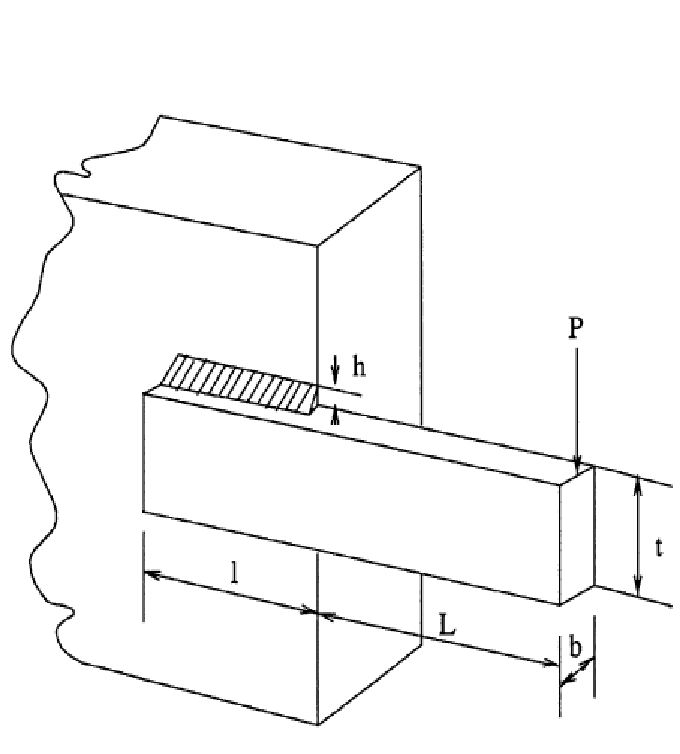
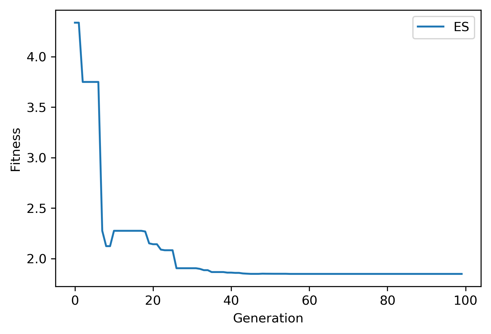

Example 3: Welded-beam design¶
Example of solving the heavily-constrained engineering optimization problem “Welded-beam design” using NEORL with the ES algorithm tuned with Bayesian search.
Summary¶
Algorithms: ES, Bayesian search for tuning
Type: Continuous, Single-objective, Constrained
Field: Structural Engineering
Problem Description¶
The welded beam is a common engineering optimisation problem with an objective to find an optimal set of the dimensions \(h=x_1\), \(l=x_2\), \(t=x_3\), and \(b=x_4\) such that the fabrication cost of the beam is minimized. This problem is a continuous optimisation problem. See the Figure below for graphical details of the beam dimensions (\(h, l, t, b\)) to be optimised.
{kind=link}
The cost of the welded beam is formulated as
subject to 7 rules/constraints, the first on the shear stress (\(\tau\))
the second on the bending stress (\(\sigma\))
three side constraints
the sixth on the end deflection of the beam (\(\delta\))
and the last on the buckling load on the bar (\(P_c\))
while the range of the design variables are:
The derived variables and their related constants are expressed as follows:
NEORL script¶
#---------------------------------
# Import packages
#---------------------------------
import numpy as np
np.random.seed(50)
import matplotlib.pyplot as plt
from math import sqrt
from neorl.tune import BAYESTUNE
from neorl import ES
#**********************************************************
# Part I: Original Problem
#**********************************************************
#Define the fitness function (for the welded beam)
def BEAM(x):
y = 1.10471*x[0]**2*x[1]+0.04811*x[2]*x[3]*(14.0+x[1])
# parameters
P = 6000; L = 14; E = 30e+6; G = 12e+6;
t_max = 13600; s_max = 30000; d_max = 0.25;
M = P*(L+x[1]/2)
R = sqrt(0.25*(x[1]**2+(x[0]+x[2])**2))
J = 2*(sqrt(2)*x[0]*x[1]*(x[1]**2/12+0.25*(x[0]+x[2])**2));
P_c = (4.013*E/(6*L**2))*x[2]*x[3]**3*(1-0.25*x[2]*sqrt(E/G)/L);
t1 = P/(sqrt(2)*x[0]*x[1]); t2 = M*R/J;
t = sqrt(t1**2+t1*t2*x[1]/R+t2**2);
s = 6*P*L/(x[3]*x[2]**2)
d = 4*P*L**3/(E*x[3]*x[2]**3);
# Constraints
g1 = t-t_max; #done
g2 = s-s_max; #done
g3 = x[0]-x[3];
g4 = 0.10471*x[0]**2+0.04811*x[2]*x[3]*(14.0+x[1])-5.0;
g5 = 0.125-x[0];
g6 = d-d_max;
g7 = P-P_c; #done
g=[g1,g2,g3,g4,g5,g6,g7]
g_round=np.round(np.array(g),6)
w1=100
w2=100
phi=sum(max(item,0) for item in g_round)
viol=sum(float(num) > 0 for num in g_round)
reward = (y + (w1*phi + w2*viol))
return reward
#**********************************************************
# Part II: Setup parameter space
#**********************************************************
#--setup the parameter space for the welded beam
lb=[0.1, 0.1, 0.1, 0.1]
ub=[2.0, 10, 10, 2.0]
d2type=['float', 'float', 'float', 'float']
BOUNDS={}
nx=4
for i in range(nx):
BOUNDS['x'+str(i+1)]=[d2type[i], lb[i], ub[i]]
#*************************************************************
# Part III: Define fitness function for hyperparameter tuning
#*************************************************************
def tune_fit(cxpb, mu, alpha, cxmode, mutpb):
#--setup the ES algorithm
es=ES(mode='min', bounds=BOUNDS, fit=BEAM, lambda_=80, mu=mu, mutpb=mutpb, alpha=alpha,
cxmode=cxmode, cxpb=cxpb, ncores=1, seed=1)
#--Evolute the ES object and obtains y_best
#--turn off verbose for less algorithm print-out when tuning
x_best, y_best, es_hist=es.evolute(ngen=100, verbose=0)
return y_best #returns the best score
#*************************************************************
# Part IV: Tuning
#*************************************************************
#Setup the parameter space for Bayesian optimisation
#VERY IMPORTANT: The order of these parameters MUST be similar to their order in tune_fit
#see tune_fit
param_grid={
#def tune_fit(cxpb, mu, alpha, cxmode):
'cxpb': ['float', 0.1, 0.7], #cxpb is first (low=0.1, high=0.8, type=float/continuous)
'mu': ['int', 30, 60], #mu is second (low=30, high=60, type=int/discrete)
'alpha':['grid', [0.1, 0.2, 0.3, 0.4]], #alpha is third (grid with fixed values, type=grid/categorical)
'cxmode':['grid', ['blend', 'cx2point']],
'mutpb': ['float', 0.05, 0.3]} #cxmode is fourth (grid with fixed values, type=grid/categorical)
#setup a bayesian tune object
btune=BAYESTUNE(param_grid=param_grid, fit=tune_fit, ncases=30)
#tune the parameters with method .tune
bayesres=btune.tune(ncores=1, csvname='bayestune.csv', verbose=True)
print('----Top 10 hyperparameter sets----')
bayesres = bayesres[bayesres['score'] >= 1] #drop the cases with scores < 1 (violates the constraints)
bayesres = bayesres.sort_values(['score'], axis='index', ascending=True) #rank the scores from best (lowest) to worst (high)
print(bayesres.iloc[0:10,:]) #the results are saved in dataframe and ranked from best to worst
#*************************************************************
# Part V: Rerun ES with the best hyperparameter set
#*************************************************************
es=ES(mode='min', bounds=BOUNDS, fit=BEAM, lambda_=80, mu=bayesres['mu'].iloc[0],
mutpb=bayesres['mutpb'].iloc[0], alpha=bayesres['alpha'].iloc[0],
cxmode=bayesres['cxmode'].iloc[0], cxpb=bayesres['cxpb'].iloc[0],
ncores=1, seed=1)
x_best, y_best, es_hist=es.evolute(ngen=100, verbose=0)
print('Best fitness (y) found:', y_best)
print('Best individual (x) found:', x_best)
#---------------------------------
# Plot
#---------------------------------
#Plot fitness convergence
plt.figure()
plt.plot(np.array(es_hist), label='ES')
plt.xlabel('Generation')
plt.ylabel('Fitness')
plt.legend()
plt.savefig('ex3_fitness.png',format='png', dpi=300, bbox_inches="tight")
plt.show()
Results¶
After Bayesian hyperparameter tuning, the top 10 are
----Top 10 hyperparameter sets----
cxpb mu alpha cxmode mutpb score
id
13 0.140799 35 0.3 blend 0.110994 1.849573
18 0.139643 37 0.3 blend 0.094496 1.925569
25 0.341248 39 0.1 cx2point 0.197213 2.098090
1 0.177505 32 0.3 blend 0.088050 2.144512
20 0.100000 35 0.3 blend 0.104131 2.198990
22 0.218197 30 0.3 blend 0.114197 2.228448
17 0.364451 34 0.3 blend 0.102634 2.235059
24 0.145365 42 0.3 blend 0.200532 2.292646
19 0.100000 55 0.3 blend 0.104209 2.349494
6 0.573142 38 0.4 cx2point 0.223231 2.349795
After re-running the problem with the best hyperparameter set, the convergence of the fitness function is shown below
{kind=link}
while the best \(\vec{x} (x_1-x_4)\) and \(y=f(x)\) (minimum beam cost) are:
Best fitness (y) found: 1.849572817626747
Best individual (x) found: [0.18756483308730693, 4.053366828472939, 8.731994883504612, 0.2231022567643955]